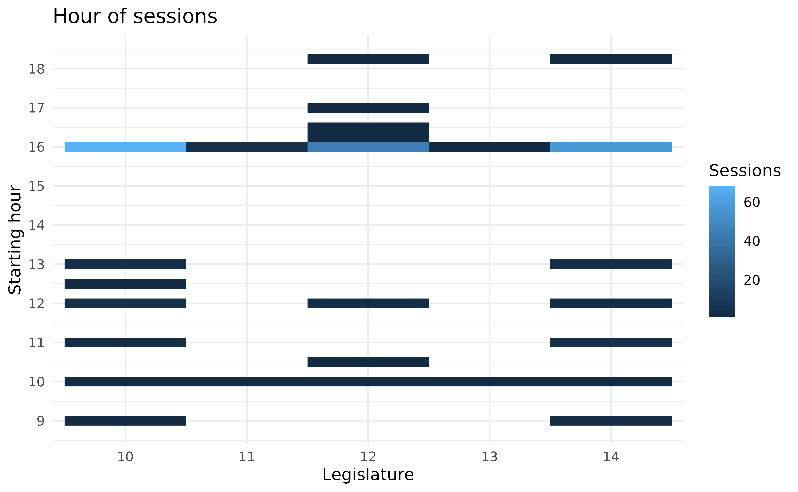

library("senadoRES")
library("dplyr")
#>
#> Attaching package: 'dplyr'
#> The following objects are masked from 'package:stats':
#>
#> filter, lag
#> The following objects are masked from 'package:base':
#>
#> intersect, setdiff, setequal, union
library("ggplot2")Senadores
This function return the members of the Senate:
ts <- senadores()
head(ts)
#> nombre apellidos legislatura ultCredencial procedTipo
#> 1 FERNANDO ABAD BÉCQUER 5 260 D
#> 2 ENRIQUE ABAD BENEDICTO 10 034 E
#> 3 ELISABET ABAD GIRALT 12 051 D
#> 4 JOSÉ ANTONIO ABAD LÓPEZ-BREA 3 039 E
#> 5 ADOLFO ABEJÓN ORTEGA 9 081 E
#> 6 FRANCISCO ABELLÁN MARTÍNEZ 9 242 D
#> procedLiteral procedLugar grupoCod
#> 1 Designado Asamblea de Madrid Asamblea de Madrid
#> 2 Electo Sevilla Sevilla
#> 3 Designada Parlamento de Cataluña Parlamento de Cataluña
#> 4 Electo Zamora Zamora
#> 5 Electo Valladolid Valladolid
#> 6 Designado Asamblea Regional de Murcia Asamblea Regional de Murcia
#> grupoSiglas grupoNombre sex
#> 1 800 GPS male
#> 2 800 GPS male
#> 3 807 GPN female
#> 4 CP GPCP male
#> 5 801 GPP male
#> 6 800 GPS maleWe can see the increase of females on the Senate along the legislatures:
ts %>%
group_by(legislatura) %>%
count(sex) %>%
mutate(total = sum(n)) %>%
filter(!is.na(sex)) %>%
mutate(ratio = n/total) %>%
filter(sex != "male") %>%
ggplot() +
geom_point(aes(legislatura, ratio, col = sex, shape = sex), size = 3) +
geom_hline(yintercept = 0.5, linetype = 2, col = "red") +
scale_x_continuous(breaks = seq_len(15)) +
scale_y_continuous(breaks = seq(from = 0, to = 0.7, by = .1),
expand = expansion(add = c(0, 0.01)), limits = c(0, NA)) +
theme_minimal() +
labs(title = "Ratio of women", x = "Legislatura", y = "Ratio of women")
Documents
The Senate has its own publication with different types of documents. The three main documents are a document, the boletin and the sumario. All recognized documents have a code named CSV. You can create the CSV with:
document_csv(legislatura = 14, sesion = 1, number = 1)
#> [1] "BOCG_D_14_1_1"
boletin_csv(legislatura = 14, sesion = 1)
#> [1] "BOCG_T_14_1"
sumario_csv(legislatura = 14, sesion = 1)
#> [1] "BOCG_S_14_1"If you found a CSV and you aren’t sure if a code is valid with
check_code(). Once we have a valid CSV we can retrieve the
information about the document:
boletin_csv <- boletin_csv(14, 3)
b <- boletin(boletin_csv)
head(b[, c(1:14, 16)])
#> SECC NBOL ANNO FECHA CVE PAGI
#> 1 S 3 2019 2019-12-11 BOCG_T_14_3 1
#> 2 S 3 2019 2019-12-11 BOCG_T_14_3 1
#> 3 S 3 2019 2019-12-11 BOCG_T_14_3 1
#> 4 S 3 2019 2019-12-11 BOCG_T_14_3 1
#> 5 S 3 2019 2019-12-11 BOCG_T_14_3 1
#> 6 S 3 2019 2019-12-11 BOCG_T_14_3 1
#> apartado
#> 1 IV. Otras actividades parlamentarias
#> 2 VI. Administración del Senado
#> 3 VI. Administración del Senado
#> 4 VI. Administración del Senado
#> 5 VI. Administración del Senado
#> 6 VI. Administración del Senado
#> subapartado numpag numpagfin DISP
#> 1 Acuerdos e Informes de la Diputación Permanente 2 2 10
#> 2 Personal eventual 3 3 11
#> 3 Personal eventual 4 4 12
#> 4 Personal eventual 5 5 13
#> 5 Personal eventual 6 6 14
#> 6 Personal eventual 7 7 15
#> TITULO
#> 1 Informe por el que se da cuenta a la nueva Cámara de los asuntos tramitados por la Diputación Permanente y de sus decisiones, en cumplimiento de lo dispuesto en el artículo 78.4 de la Constitución (se corresponde con el número de expediente 561/000020 de la XIII Legislatura).
#> 2 Personal eventual al servicio del ex-Presidente del Senado.
#> 3 Personal eventual adscrito a la Presidencia del Senado.
#> 4 Personal eventual adscrito a la Vicepresidencia Primera del Senado.
#> 5 Personal eventual adscrito a la Vicepresidencia Segunda del Senado.
#> 6 Personal eventual adscrito a la Secretaría Primera del Senado.
#> FASE NUMEXP document
#> 1 Conocimiento por el Pleno 561/000002 BOCG_D_14_3_10
#> 2 Nombramientos 523/000002 BOCG_D_14_3_11
#> 3 Nombramientos 523/000003 BOCG_D_14_3_12
#> 4 Nombramientos 523/000004 BOCG_D_14_3_13
#> 5 Nombramientos 523/000005 BOCG_D_14_3_14
#> 6 Nombramientos 523/000006 BOCG_D_14_3_15Here I omitted a column because the functions also return the text explaining the document and it is a bit verbose to show.
sumario_csv <- sumario_csv(legislatura = 14, sesion = 1)
s <- sumario(sumario_csv)
head(s)
#> idlegislatura idnumero fechaBol nomSumBol nomSumTBol
#> 1 14 1 2019-12-05 BOCG_S_14_1 BOCG_T_14_1
#> 2 14 1 2019-12-05 BOCG_S_14_1 BOCG_T_14_1
#> 3 14 1 2019-12-05 BOCG_S_14_1 BOCG_T_14_1
#> directorioBol apNumRomano apDescripcion
#> 1 legis14/publicaciones/pdf/senado/bocg VI ADMINISTRACIÓN DEL SENADO
#> 2 legis14/publicaciones/pdf/senado/bocg VI ADMINISTRACIÓN DEL SENADO
#> 3 legis14/publicaciones/pdf/senado/bocg VI ADMINISTRACIÓN DEL SENADO
#> subDescripcion
#> 1 PERSONAL EVENTUAL
#> 2 PERSONAL EVENTUAL
#> 3 PERSONAL EVENTUAL
#> objeto
#> 1 Personal eventual del Senado como Asistentes de los señores Senadores de los Grupos Parlamentarios de la XIII Legislatura.
#> 2 Personal eventual adscrito a la Presidencia, Vicepresidencias Primera y Segunda y Secretarías Primera y Cuarta del Senado de la XIII Legislatura.
#> 3 Personal eventual al servicio del ex-Presidente del Senado.
#> tipoExpediente disp cve fase
#> 1 511 9309 BOCG_D_14_1_1 Ceses
#> 2 523 9310 BOCG_D_14_1_2 Ceses
#> 3 523 9311 BOCG_D_14_1_3 CesesBoth of them refer to a session, but they do not provide the same information. To make it easier to retrieve all information possible from a session you can do this:
bs <- boletin_sumario(legislatura = 14, sesion = 3)
head(bs)
#> cve idnumero idlegislatura fechaBol nomSumBol nomSumTBol
#> 1 BOCG_D_14_3_10 3 14 2019-12-11 BOCG_S_14_3 BOCG_T_14_3
#> 2 BOCG_D_14_3_11 3 14 2019-12-11 BOCG_S_14_3 BOCG_T_14_3
#> 3 BOCG_D_14_3_12 3 14 2019-12-11 BOCG_S_14_3 BOCG_T_14_3
#> 4 BOCG_D_14_3_13 3 14 2019-12-11 BOCG_S_14_3 BOCG_T_14_3
#> 5 BOCG_D_14_3_14 3 14 2019-12-11 BOCG_S_14_3 BOCG_T_14_3
#> 6 BOCG_D_14_3_15 3 14 2019-12-11 BOCG_S_14_3 BOCG_T_14_3
#> directorioBol directorioXmlBol
#> 1 legis14/publicaciones/pdf/senado/bocg legis14/publicaciones/xml/senado/bocg
#> 2 legis14/publicaciones/pdf/senado/bocg legis14/publicaciones/xml/senado/bocg
#> 3 legis14/publicaciones/pdf/senado/bocg legis14/publicaciones/xml/senado/bocg
#> 4 legis14/publicaciones/pdf/senado/bocg legis14/publicaciones/xml/senado/bocg
#> 5 legis14/publicaciones/pdf/senado/bocg legis14/publicaciones/xml/senado/bocg
#> 6 legis14/publicaciones/pdf/senado/bocg legis14/publicaciones/xml/senado/bocg
#> directorioEpubBol apNumRomano
#> 1 legis14/publicaciones/epub/senado/bocg IV
#> 2 legis14/publicaciones/epub/senado/bocg VI
#> 3 legis14/publicaciones/epub/senado/bocg VI
#> 4 legis14/publicaciones/epub/senado/bocg VI
#> 5 legis14/publicaciones/epub/senado/bocg VI
#> 6 legis14/publicaciones/epub/senado/bocg VI
#> apDescripcion
#> 1 OTRAS ACTIVIDADES PARLAMENTARIAS
#> 2 ADMINISTRACIÓN DEL SENADO
#> 3 ADMINISTRACIÓN DEL SENADO
#> 4 ADMINISTRACIÓN DEL SENADO
#> 5 ADMINISTRACIÓN DEL SENADO
#> 6 ADMINISTRACIÓN DEL SENADO
#> subDescripcion
#> 1 ACUERDOS E INFORMES DE LA DIPUTACIÓN PERMANENTE
#> 2 PERSONAL EVENTUAL
#> 3 PERSONAL EVENTUAL
#> 4 PERSONAL EVENTUAL
#> 5 PERSONAL EVENTUAL
#> 6 PERSONAL EVENTUAL
#> objeto
#> 1 Informe por el que se da cuenta a la nueva Cámara de los asuntos tramitados por la Diputación Permanente y de sus decisiones, en cumplimiento de lo dispuesto en el artículo 78.4 de la Constitución (se corresponde con el número de expediente 561/000020 de la XIII Legislatura).
#> 2 Personal eventual al servicio del ex-Presidente del Senado.
#> 3 Personal eventual adscrito a la Presidencia del Senado.
#> 4 Personal eventual adscrito a la Vicepresidencia Primera del Senado.
#> 5 Personal eventual adscrito a la Vicepresidencia Segunda del Senado.
#> 6 Personal eventual adscrito a la Secretaría Primera del Senado.
#> tipoExpediente disp fase SECC ANNO FECHA
#> 1 561 9318 Conocimiento por el Pleno S 2019 2019-12-11
#> 2 523 9319 Nombramientos S 2019 2019-12-11
#> 3 523 9320 Nombramientos S 2019 2019-12-11
#> 4 523 9321 Nombramientos S 2019 2019-12-11
#> 5 523 9322 Nombramientos S 2019 2019-12-11
#> 6 523 9323 Nombramientos S 2019 2019-12-11
#> CVE PAGI apartado
#> 1 BOCG_T_14_3 1 IV. Otras actividades parlamentarias
#> 2 BOCG_T_14_3 1 VI. Administración del Senado
#> 3 BOCG_T_14_3 1 VI. Administración del Senado
#> 4 BOCG_T_14_3 1 VI. Administración del Senado
#> 5 BOCG_T_14_3 1 VI. Administración del Senado
#> 6 BOCG_T_14_3 1 VI. Administración del Senado
#> subapartado numpag numpagfin DISP
#> 1 Acuerdos e Informes de la Diputación Permanente 2 2 10
#> 2 Personal eventual 3 3 11
#> 3 Personal eventual 4 4 12
#> 4 Personal eventual 5 5 13
#> 5 Personal eventual 6 6 14
#> 6 Personal eventual 7 7 15
#> TITULO
#> 1 Informe por el que se da cuenta a la nueva Cámara de los asuntos tramitados por la Diputación Permanente y de sus decisiones, en cumplimiento de lo dispuesto en el artículo 78.4 de la Constitución (se corresponde con el número de expediente 561/000020 de la XIII Legislatura).
#> 2 Personal eventual al servicio del ex-Presidente del Senado.
#> 3 Personal eventual adscrito a la Presidencia del Senado.
#> 4 Personal eventual adscrito a la Vicepresidencia Primera del Senado.
#> 5 Personal eventual adscrito a la Vicepresidencia Segunda del Senado.
#> 6 Personal eventual adscrito a la Secretaría Primera del Senado.
#> FASE NUMEXP
#> 1 Conocimiento por el Pleno 561/000002
#> 2 Nombramientos 523/000002
#> 3 Nombramientos 523/000003
#> 4 Nombramientos 523/000004
#> 5 Nombramientos 523/000005
#> 6 Nombramientos 523/000006
#> text
#> 1 El Pleno del Senado, en la sesión constitutiva celebrada el día 3 de diciembre de 2019, ha tomado conocimiento del Informe de la Diputación Permanente de la XIII Legislatura por el que se da cuenta a la nueva Cámara de los asuntos tramitados por la Diputación Permanente y de sus decisiones, en cumplimiento de lo dispuesto en el artículo 78.4 de la Constitución, que aparece publicado en el BOCG, Senado, número 2, de fecha 10 de diciembre de 2019.Lo que se publica para general conocimiento.Palacio del Senado, 3 de diciembre de 2019.—P.D., Manuel Cavero Gómez, Letrado Mayor del Senado.
#> 2 En virtud de lo dispuesto en el artículo 2 del Estatuto del Personal de las Cortes Generales y de conformidad con lo establecido en el acuerdo relativo al estatuto del ex-Presidente, aprobado por la Mesa del Senado con fecha 21 de mayo de 2019, y a propuesta del Excmo. Sr. D. Pío García-Escudero Márquez, la Excma. Sra. Presidenta del Senado ha resuelto nombrar a las personas que abajo se relacionan como personal eventual del Senado, en el cargo que para cada uno de ellos se señala, con efectos del día 3 de diciembre de 2019:— D.ª María Angélica Aguirre Álvarez (Asistente del ex-Presidente)— D. José Manuel Bustos Bao (conductor del ex-Presidente)Lo que se publica para general conocimiento.Palacio del Senado, 5 de diciembre de 2019.—P.D., Manuel Cavero Gómez, Letrado Mayor del Senado.
#> 3 En virtud de lo dispuesto en el artículo 2 del Estatuto del Personal de las Cortes Generales la Excma. Sra. Presidenta del Senado ha resuelto nombrar a las personas que abajo se relacionan como personal eventual del Senado adscritos a la Presidencia, en el cargo que para cada uno de ellos se señala, con efectos del día 3 de diciembre de 2019:— D. David Giménez Glück (Director de Gabinete de la Presidencia)— D.ª Victoria Luna Castaños (Directora de Comunicación de Presidencia)— D.ª Eva María Cuesta Cano (Adjunta de Comunicación)— D. Antonio García Maldonado (Asesor de la Presidenta)— D. Carles Martí Jufresa (Asesor de la Presidenta)— D.ª Elena Pardo de Santayana Villafranca (Jefa de la Secretaría de la Presidenta)— D.ª Beatriz Moreno Mínguez (Secretaria del Gabinete de la Presidencia)— D.ª María Teresa Giménez Fernández (Secretaria de la Presidenta)Lo que se publica para general conocimiento.Palacio del Senado, 5 de diciembre de 2019.—P.D., Manuel Cavero Gómez, Letrado Mayor del Senado.
#> 4 En virtud de lo dispuesto en el artículo 2 del Estatuto del Personal de las Cortes Generales, y a propuesta de la Excma. Sra. D.ª María Cristina Narbona Ruiz, la Excma. Sra. Presidenta del Senado ha resuelto nombrar a las personas que abajo se relacionan como personal eventual del Senado adscritas a la Vicepresidencia Primera, en el cargo que para cada uno de ellos se señala, con efectos del día 3 de diciembre de 2019:— D.ª Milagros Carreto Vega (Secretaria «A»)— D.ª María Isabel Vicente Elvira (Secretaria «B»)Lo que se publica para general conocimiento.Palacio del Senado, 5 de diciembre de 2019.—P.D., Manuel Cavero Gómez, Letrado Mayor del Senado.
#> 5 En virtud de lo dispuesto en el artículo 2 del Estatuto del Personal de las Cortes Generales, y a propuesta del Excmo. Sr. D. Pío García-Escudero Márquez, la Excma. Sra. Presidenta del Senado ha resuelto nombrar a las personas que abajo se relacionan como personal eventual del Senado adscritos a la Vicepresidencia Segunda, en el cargo que para cada uno de ellos se señala, con efectos del día 3 de diciembre de 2019:— D. Luis Hernández Martín (Secretario «A»)— D.ª María Isabel Hernanz Jaime (Secretaria «B»)Lo que se publica para general conocimiento.Palacio del Senado, 5 de diciembre de 2019.—P.D., Manuel Cavero Gómez, Letrado Mayor del Senado.
#> 6 En virtud de lo dispuesto en el artículo 2 del Estatuto del Personal de las Cortes Generales, y a propuesta del Excmo. Sr. D. Francisco Manuel Fajardo Palarea, la Excma. Sra. Presidenta del Senado ha resuelto nombrar D.ª María Sánchez Manzanares como personal eventual del Senado adscrita a la Secretaría Primera, en el cargo de Secretaria «A», con efectos del día 3 de diciembre de 2019.Lo que se publica para general conocimiento.Palacio del Senado, 5 de diciembre de 2019.—P.D., Manuel Cavero Gómez, Letrado Mayor del Senado.En virtud de lo dispuesto en el artículo 2 del Estatuto del Personal de las Cortes Generales, y a propuesta del Excmo. Sr. D. Francisco Manuel Fajardo Palarea, la Excma. Sra. Presidenta del Senado ha resuelto nombrar D. Carlos Alberto Magdaleno Galdona como personal eventual del Senado adscrito a la Secretaría Primera, en el cargo de Secretario «B», con efectos del día 3 de diciembre de 2019.Lo que se publica para general conocimiento.Palacio del Senado, 5 de diciembre de 2019.—P.D., Manuel Cavero Gómez, Letrado Mayor del Senado.If you are interested in a single document you can then use:
document_csv <- "BOCG_D_14_3_15"
d <- documento(document_csv)
d[, 1:15]
#> SECC NBOL ANNO DISP INIC
#> 1 S 3 2019 15 523/000006
#> TITULO FASE
#> 1 Personal eventual adscrito a la Secretaría Primera del Senado. Nombramientos
#> FECHA CVE apartado subapartado
#> 1 2019-12-11 BOCG_D_14_3_15 VI. Administración del Senado Personal eventual
#> numpag numpagfin DISP.1 NUMEXP
#> 1 7 7 15 523/000006Plenarias
As you need to know how many plenary sessions were done you can check them with:
head(plenarias(10))
#> Warning in Sys.setlocale(category = "LC_TIME", locale = "es_ES.utf-8"): OS
#> reports request to set locale to "es_ES.utf-8" cannot be honored
#> sesionLegislatura sesionNumero sesionFechaInicio sesionHoraInicio
#> 1 10 81 13 de octubre de 2015 16 hours
#> 2 10 80 29 de septiembre de 2015 16 hours
#> 3 10 79 8 de septiembre de 2015 16 hours
#> 4 10 78 1 de septiembre de 2015 13 hours
#> 5 10 77 16 de julio de 2015 12 hours
#> 6 10 76 7 de julio de 2015 16 hours
#> sesionTitulo
#> 1 Sesión plenaria número 81
#> 2 Sesión plenaria número 80
#> 3 Sesión plenaria número 79
#> 4 Sesión plenaria número 78
#> 5 Sesión plenaria número 77
#> 6 Sesión plenaria número 76
#> urlPagina
#> 1 /web/actividadparlamentaria/sesionesplenarias/pleno/rwdsesionespleno/detalle/index.html?id=85&legis=10&ns=81
#> 2 /web/actividadparlamentaria/sesionesplenarias/pleno/rwdsesionespleno/detalle/index.html?id=84&legis=10&ns=80
#> 3 /web/actividadparlamentaria/sesionesplenarias/pleno/rwdsesionespleno/detalle/index.html?id=82&legis=10&ns=79
#> 4 /web/actividadparlamentaria/sesionesplenarias/pleno/rwdsesionespleno/detalle/index.html?id=81&legis=10&ns=78
#> 5 /web/actividadparlamentaria/sesionesplenarias/pleno/rwdsesionespleno/detalle/index.html?id=80&legis=10&ns=77
#> 6 /web/actividadparlamentaria/sesionesplenarias/pleno/rwdsesionespleno/detalle/index.html?id=79&legis=10&ns=76
#> urlPaginaVotaciones
#> 1 /web/actividadparlamentaria/sesionesplenarias/pleno/rwdsesionespleno/detalle/index.html?id=85&legis=10&ns=81&vot=vot
#> 2 /web/actividadparlamentaria/sesionesplenarias/pleno/rwdsesionespleno/detalle/index.html?id=84&legis=10&ns=80&vot=vot
#> 3 /web/actividadparlamentaria/sesionesplenarias/pleno/rwdsesionespleno/detalle/index.html?id=82&legis=10&ns=79&vot=vot
#> 4 /web/actividadparlamentaria/sesionesplenarias/pleno/rwdsesionespleno/detalle/index.html?id=81&legis=10&ns=78&vot=vot
#> 5 /web/actividadparlamentaria/sesionesplenarias/pleno/rwdsesionespleno/detalle/index.html?id=80&legis=10&ns=77&vot=vot
#> 6 /web/actividadparlamentaria/sesionesplenarias/pleno/rwdsesionespleno/detalle/index.html?id=79&legis=10&ns=76&vot=vot
#> fichUrlVotaciones
#> 1 /legis10/votaciones/ses_81.xml
#> 2 /legis10/votaciones/ses_80.xml
#> 3 /legis10/votaciones/ses_79.xml
#> 4 /legis10/votaciones/ses_78.xml
#> 5 /legis10/votaciones/ses_77.xml
#> 6 /legis10/votaciones/ses_76.xml
#> fichUrlDetalleSesion
#> 1 /web/ficopendataservlet?tipoFich=11&legis=10&org=S000040&numSes=081&numConv=01&fecha=13102015
#> 2 /web/ficopendataservlet?tipoFich=11&legis=10&org=S000040&numSes=080&numConv=01&fecha=29092015
#> 3 /web/ficopendataservlet?tipoFich=11&legis=10&org=S000040&numSes=079&numConv=01&fecha=08092015
#> 4 /web/ficopendataservlet?tipoFich=11&legis=10&org=S000040&numSes=078&numConv=01&fecha=01092015
#> 5 /web/ficopendataservlet?tipoFich=11&legis=10&org=S000040&numSes=077&numConv=01&fecha=16072015
#> 6 /web/ficopendataservlet?tipoFich=11&legis=10&org=S000040&numSes=076&numConv=01&fecha=07072015Note that this information is only available from the X legislature onward
s <- lapply(10:14, plenarias)
#> Warning in Sys.setlocale(category = "LC_TIME", locale = "es_ES.utf-8"): OS
#> reports request to set locale to "es_ES.utf-8" cannot be honored
#> Warning in Sys.setlocale(category = "LC_TIME", locale = "es_ES.utf-8"): OS
#> reports request to set locale to "es_ES.utf-8" cannot be honored
#> Warning in Sys.setlocale(category = "LC_TIME", locale = "es_ES.utf-8"): OS
#> reports request to set locale to "es_ES.utf-8" cannot be honored
#> Warning in Sys.setlocale(category = "LC_TIME", locale = "es_ES.utf-8"): OS
#> reports request to set locale to "es_ES.utf-8" cannot be honored
#> Warning in Sys.setlocale(category = "LC_TIME", locale = "es_ES.utf-8"): OS
#> reports request to set locale to "es_ES.utf-8" cannot be honored
sessions <- do.call(rbind, s)
ggplot(sessions) +
stat_sum(aes(sesionLegislatura, sesionHoraInicio,
fill = after_stat(n), size = 1), geom = "tile") +
guides(size = "none") +
theme_minimal() +
labs(title = "Hour of sessions", x = "Legislature", y = "Starting hour",
fill = "Sessions") +
scale_y_continuous(breaks = 1:19)
So most of the times they meet at the afternoon.
If you want more detailed information of each session you can use the fichUrlDetalleSesion details:
details <- detalles(paste0("https://www.senado.es", sessions$fichUrlDetalleSesion[3]))
details[1:5, c("asunto_id", "asunto_hora_inicio", "asunto_hora_fin", "punto_literal", "intervencion_orador_desc", "intervencion_orador_idWeb")]
#> asunto_id asunto_hora_inicio asunto_hora_fin punto_literal
#> 1 146024 16:01 16:02 <NA>
#> 2 146026 16:02 16:02 <NA>
#> 3 146028 16:03 16:03 Actas
#> 4 146029 16:03 16:03 Preguntas
#> 5 146030 16:03 16:11 Preguntas
#> intervencion_orador_desc intervencion_orador_idWeb
#> 1 AGORRIA MARTÍNEZ, IDOIA 16825
#> 2 URQUIZU SANCHO, IGNACIO 16845
#> 3 <NA> <NA>
#> 4 <NA> <NA>
#> 5 LÓPEZ ÁGUEDA, ÓSCAR 15026This will help you know who talked, how long about which topics and which documents got referenced.
Grupos
If you are interested on the political groups composition at certain legislature:
g <- grupos(12)
head(g)
#> codigo nombre siglas notasWeb
#> 1 801 GRUPO PARLAMENTARIO POPULAR EN EL SENADO GPP
#> 2 801 GRUPO PARLAMENTARIO POPULAR EN EL SENADO GPP
#> 3 800 GRUPO PARLAMENTARIO SOCIALISTA GPS
#> 4 800 GRUPO PARLAMENTARIO SOCIALISTA GPS
#> 5 800 GRUPO PARLAMENTARIO SOCIALISTA GPS
#> 6 800 GRUPO PARLAMENTARIO SOCIALISTA GPS
#> fechaConstitucion fechaBaja total totalElectos totalDesignados partidoCod
#> 1 19/07/2016 41 32 9 PP
#> 2 19/07/2016 41 32 9 PAR
#> 3 19/07/2016 15 9 6 PSOE
#> 4 19/07/2016 15 9 6 PSE-EE-PSOE-
#> 5 19/07/2016 15 9 6 PSC-PSOE
#> 6 19/07/2016 15 9 6 PSdeG-PSOE
#> partidoSiglas partidoNombre
#> 1 PP PARTIDO POPULAR
#> 2 PAR PARTIDO ARAGONÉS
#> 3 PSOE PARTIDO SOCIALISTA OBRERO ESPAÑOL
#> 4 PSE-EE(PSOE) PARTIDO SOCIALISTA DE EUSKADI-EUSKADIKO EZKERRA (PSOE)
#> 5 PSC-PSOE PARTIT DELS SOCIALISTES DE CATALUNYA
#> 6 PSdeG-PSOE PARTIDO DOS SOCIALISTAS DE GALICIA-PSOE
#> partidoUrl partidoTotal partidoTotalElectos
#> 1 www.pp.es 40 31
#> 2 www.partidoaragones.es 1 1
#> 3 www.psoe.es 12 8
#> 4 www.socialistasvascos.com 1 0
#> 5 www.socialistes.cat 1 0
#> 6 www.psdeg-psoe.org 1 1
#> partidoTotalDesignados
#> 1 9
#> 2 0
#> 3 4
#> 4 1
#> 5 1
#> 6 0Note that the record in this case starts from the XII legislature.
Laws
As a legislative chamber one of the most important duties is to approve and change laws- We can see how many got approved (note that some are closer on time or are still on the process of being approved):
lex14 <- leyes(14)
head(lex14)
#> titulo
#> 1 Ley 13/2023, de 24 de mayo, por la que se modifican la Ley 58/2003, de 17 de diciembre, General Tributaria, en transposición de la Directiva (UE) 2021/514 del Consejo de 22 de marzo de 2021, por la que se modifica la Directiva 2011/16/UE relativa a la cooperación administrativa en el ámbito de la fiscalidad, y otras normas tributarias (621/000088)
#> 2 Ley 12/2023, de 24 de mayo, por el derecho a la vivienda (621/000089)
#> 3 Ley 11/2023, de 8 de mayo, de trasposición de Directivas de la Unión Europea en materia de accesibilidad de determinados productos y servicios, migración de personas altamente cualificadas, tributaria y digitalización de actuaciones notariales y registrales; y por la que se modifica la Ley 12/2011, de 27 de mayo, sobre responsabilidad civil por daños nucleares o producidos por materiales radiactivos (621/000087)
#> 4 Ley 10/2023, de 3 de abril, por la que se aprueba la metodología de señalamiento del cupo del País Vasco para el quinquenio 2022-2026 (621/000086)
#> 5 Ley 9/2023, de 3 de abril, por la que se modifica la Ley 12/2002, de 23 de mayo, por la que se aprueba el Concierto Económico con la Comunidad Autónoma del País Vasco (621/000085)
#> 6 Ley 8/2023, de 3 de abril, por la que se modifica la Ley 28/1990, de 26 de diciembre, por la que se aprueba el Convenio Económico entre el Estado y la Comunidad Foral de Navarra (621/000084)
#> urlFichaLey
#> 1 https://www.senado.es/web/actividadparlamentaria/iniciativas/detalleiniciativa/index.html?legis=14&id1=621&id2=000088
#> 2 https://www.senado.es/web/actividadparlamentaria/iniciativas/detalleiniciativa/index.html?legis=14&id1=621&id2=000089
#> 3 https://www.senado.es/web/actividadparlamentaria/iniciativas/detalleiniciativa/index.html?legis=14&id1=621&id2=000087
#> 4 https://www.senado.es/web/actividadparlamentaria/iniciativas/detalleiniciativa/index.html?legis=14&id1=621&id2=000086
#> 5 https://www.senado.es/web/actividadparlamentaria/iniciativas/detalleiniciativa/index.html?legis=14&id1=621&id2=000085
#> 6 https://www.senado.es/web/actividadparlamentaria/iniciativas/detalleiniciativa/index.html?legis=14&id1=621&id2=000084
#> anio boe
#> 1 2023 B.O.E. nº 124, de 25 de Mayo de 2023
#> 2 2023 B.O.E. nº 124, de 25 de Mayo de 2023
#> 3 2023 B.O.E. nº 110, de 9 de Mayo de 2023
#> 4 2023 B.O.E. nº 80, de 4 de Abril de 2023
#> 5 2023 B.O.E. nº 80, de 4 de Abril de 2023
#> 6 2023 B.O.E. nº 80, de 4 de Abril de 2023
#> urlBoe
#> 1 http://www.boe.es/diario_boe/txt.php?id=BOE-A-2023-12204
#> 2 http://www.boe.es/diario_boe/txt.php?id=BOE-A-2023-12203
#> 3 http://www.boe.es/diario_boe/txt.php?id=BOE-A-2023-11022
#> 4 http://www.boe.es/diario_boe/txt.php?id=BOE-A-2023-8456
#> 5 http://www.boe.es/diario_boe/txt.php?id=BOE-A-2023-8455
#> 6 http://www.boe.es/diario_boe/txt.php?id=BOE-A-2023-8454
#> bloquesTematicos
#> 1 ADMINISTRACIONES PÚBLICAS, JUSTICIA, ECONOMÍA. HACIENDA, INFORMACIÓN Y COMUNICACIÓN
#> 2 URBANISMO. VIVIENDA, JUSTICIA, TRABAJO. POLÍTICA SOCIAL, DERECHO Y LIBERTADES PÚBLICAS
#> 3 JUSTICIA, INDUSTRIA. COMERCIO. SERVICIOS, TRABAJO. POLÍTICA SOCIAL
#> 4 UNIÓN EUROPEA, ECONOMÍA. HACIENDA, ORGANIZACIÓN TERRITORIAL DEL ESTADO
#> 5 UNIÓN EUROPEA, ORGANIZACIÓN TERRITORIAL DEL ESTADO, ECONOMÍA. HACIENDA
#> 6 ORGANIZACIÓN TERRITORIAL DEL ESTADO, ECONOMÍA. HACIENDA, UNIÓN EUROPEA
#> numLey tipo
#> 1 13 Ley
#> 2 12 Ley
#> 3 11 Ley
#> 4 10 Ley
#> 5 9 Ley
#> 6 8 LeyOrganization chart
If you want to know who works where and their position you can check it out with:
head(organigrama(13))
#> nivel
#> 1 1
#> 2 2
#> 3 3
#> 4 3
#> 5 2
#> 6 3
#> nombreOficial
#> 1 Secretaría General
#> 2 Gabinete del Secretario General
#> 3 Gabinete dependiente de la Secretaría General de Unidad de asesoramiento
#> 4 Unidad de Coordinación, control y evaluación de proyectos
#> 5 Servicio de Dotación de Seguridad
#> 6 Unidad de Gestión Administrativa
#> nombre codigo codigoPadre
#> 1 Secretaría General 8
#> 2 Gabinete del Secretario General 223 8
#> 3 Unidad de asesoramiento 218 223
#> 4 Unidad de Coordinación, control y evaluación de proyectos 207 223
#> 5 Dotación de Seguridad 208 8
#> 6 Gestión Administrativa 235 208
#> tipoDependencia jefe dirCorreo
#> 1 AD MANUEL CAVERO GÓMEZ secretarialetradomayor@senado.es
#> 2 GAB
#> 3 GAB
#> 4 GAB
#> 5 SER
#> 6 UNI
#> numTelefono
#> 1 91 538 14 00
#> 2
#> 3
#> 4
#> 5
#> 6Unfortunately this doesn’t go back in time, I think it only shows the current